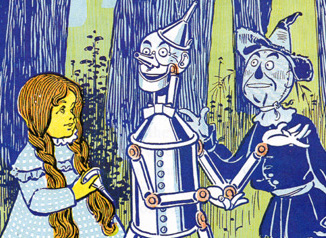

Chapter 2: The Council with the Munchkins
She was awakened by a shock, so sudden and severe that if Dorothy had not been lying on the soft bed she might have been hurt. As it was, the jar made her catch her breath and wonder what had happened; and Toto put his cold little nose into her face and whined dismally. Dorothy sat up and noticed that the house was not moving; nor was it dark, for the bright sunshine came in at the window, flooding the little room. She sprang from her bed and with Toto at her heels ran and opened the door.
The little girl gave a cry of amazement and looked about her, her eyes growing bigger and bigger at the wonderful sights she saw.

The cyclone had set the house down very gently—for a cyclone—in the midst of a country of marvelous beauty. There were lovely patches of greensward all about, with stately trees bearing rich and luscious fruits. Banks of gorgeous flowers were on every hand, and birds with rare and brilliant plumage sang and fluttered in the trees and bushes. A little way off was a small brook, rushing and sparkling along between green banks, and murmuring in a voice very grateful to a little girl who had lived so long on the dry, gray prairies.
While she stood looking eagerly at the strange and beautiful sights, she noticed coming toward her a group of the queerest people she had ever seen. They were not as big as the grown folk she had always been used to, but neither were they very small. In fact, they seemed about as tall as Dorothy, although they were many years older.
Three were men and one a woman, and all were oddly dressed. They wore pointed hats with little bells around the brims that tinkled sweetly as they moved. The hats of the men were blue, while the little woman's hat and gown were white and covered with tiny stars that sparkled in the sunlight.
When these people drew near the house they paused and whispered among themselves. Finally the little old woman stepped forward, bowed low, and welcomed Dorothy to the Land of the Munchkins, thanking her for killing the Wicked Witch of the East.
Dorothy was astonished and insisted there must be some mistake because she had never killed anyone. The little woman laughed and explained that Dorothy's house had landed on the witch.
Looking toward the corner of the house, Dorothy saw two feet sticking out beneath the beam, wearing silver shoes with pointed toes. Horrified, she asked what should be done.
The little old woman calmly explained that the Wicked Witch of the East was dead and that the Munchkins were finally free after years of bondage.
Dorothy asked who the Munchkins were and learned they were the people who lived in the eastern part of Oz. She also discovered the old woman was the good Witch of the North.
The Witch explained that only two witches in Oz were good and two were wicked. Since Dorothy had unknowingly destroyed one of the wicked witches, only the Wicked Witch of the West remained.
Dorothy longed to return home to Kansas, but the Witch had never heard of such a place. She explained that Oz was cut off from the rest of the world and still had witches and wizards.
Dorothy learned about the Great Wizard Oz, who lived in the Emerald City and was more powerful than anyone else in the land.
Soon the Wicked Witch's body disappeared, leaving only the silver shoes behind. The Witch of the North presented them to Dorothy, explaining they possessed mysterious magic.
When Dorothy asked how to return home, everyone sadly shook their heads, explaining that great deserts surrounded Oz and could not be crossed.
The Witch finally advised Dorothy to travel to the Emerald City and seek the help of the great Wizard Oz.
She kissed Dorothy on the forehead, leaving a shining mark that would protect her on her journey, and told her to follow the Yellow Brick Road.
The Munchkins wished Dorothy well, and the Witch of the North disappeared as mysteriously as she had arrived, leaving Dorothy and Toto ready to begin their adventure.